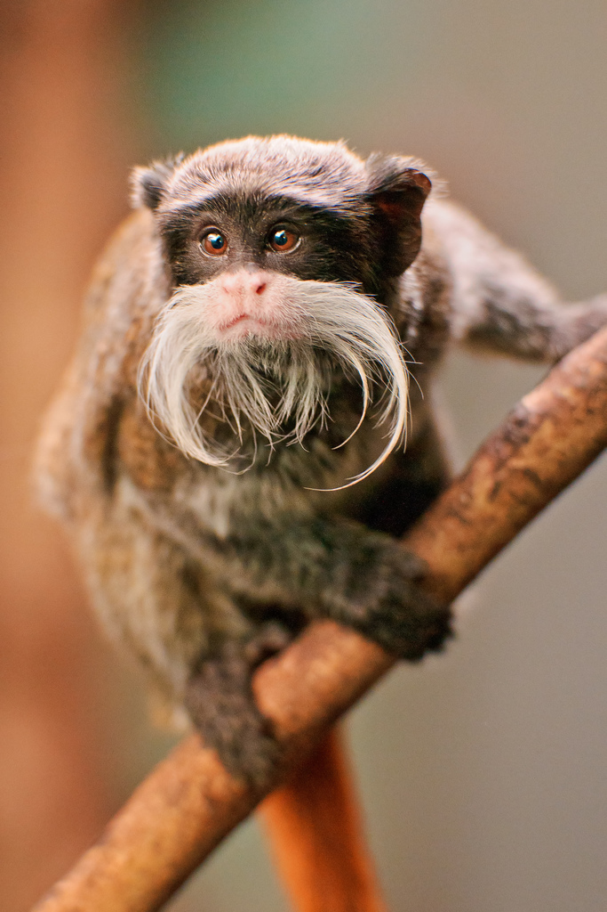

Богатству фауны нет границ!
Императорские тамарины – это вид маленьких обезьянок из семейства игрунковые. Главное достоинство этой малышки – раскидистые белые усы.
Но не только этим прославились тамарины. У них еще и особенная социальная иерархия: в стае главный не самец, как это принято у большинства животных, а самая старая самка. Чем же занимаются мужские особи у этих обезьян? На их долю выпала добыча пропитания, а так же они выполняют роль носильщиков детенышей. Забавно, не правда ли?
Тельце у этого примата совсем миниатюрное, оно не вырастает в длину больше,чем на 25 сантиметров. Масса взрослой особи тамарина составляет около 300 граммов.
Хвост у примата очень длинный, зачастую, он равен размеру туловища. За счет такой особенности сразу и не скажешь, что тамарин – маленькая обезьянка. Хвост помогает балансировать животному при перемещении по ветвям деревьев, когда оно пытается добраться до очередного вкусного и спелого плода.
Эти обезьянки – древесные животные. Для такого образа жизни природа дала им все необходимое: длинный хвост, когти и проворные лапки. Открытых пространств тамарины стараются избегать. Проживают эти приматы небольшими группами, в которых не больше 10 особей. Свою территорию образовавшаяся стая тщательно охраняет. Если вдруг сюда забредут другие тамарины, то они тот час же подвергаются изгнанию.
У них сильно развита социальная иерархия. В стае царит матриархат. Вожаком здесь считается самая опытная и старая самка. На ступеньке ниже стоят другие самки, затем детеныши и на самой нижней ступени — самцы. Им отведена вполне конкретная роль в жизни стаи – добыча пищи для остальных членов группы и перенос маленьких детенышей. Поэтому в группе самцов мало – не более 2-х особей.
Это млекопитающее отряда приматов проживает в тропических лесах, растущих на территории Южноамериканского континента. Тамаринов встречают в Бразилии, Перу и Боливии.
Как и все небольшие обезьянки, питаются эти «императоры животного мира» фруктами, различными растениями, молодыми побегами, почками и цветками. Но кроме растительной пищи в их рационе питания присутствует и белковая пища – мелкие насекомые, ящерицы, лягушки. Не побрезгуют даже птичьими яйцами, найденными на верхушках деревьев.
Иногда в стае устраиваются «парикмахерские» дни, когда обезьянки помогают друг другу подкорачивать усы. Этот процесс выполняет важную коммуникативную роль в стае.Беременная самка императорского тамарина вынашивает потомство около 1,5 месяцев. Немудрено, что после такой короткой беременности малыши появляются на свет совершенно беспомощными и весят лишь 35 граммов.
Зато у детенышей уже при рождении есть знаменитая тамаринская борода и усики. Устоявшийся матриархат у этих приматов перекладывает всю заботу о новорожденных на плечи мужской половины стаи. Детеныши тамаринов уже на третьем месяце от роду становятся более или менее самостоятельными: они могут двигаться и сами кушать. В последствии, по достижении 1,5 лет, молодые самочки остаются в своей семье, а самцы уходят из нее, «вступая» в другие стаи.
Императорские тамарины живут в природе около 10 – 15 лет.
Экзотическая внешность этих забавных приматов привлекает к себе внимание браконьеров. Которые отлавливают тамаринов для частных коллекций и продажи в зоопарки и питомники. В настоящее время этим обезьянкам присвоен статус «уязвимый вид».